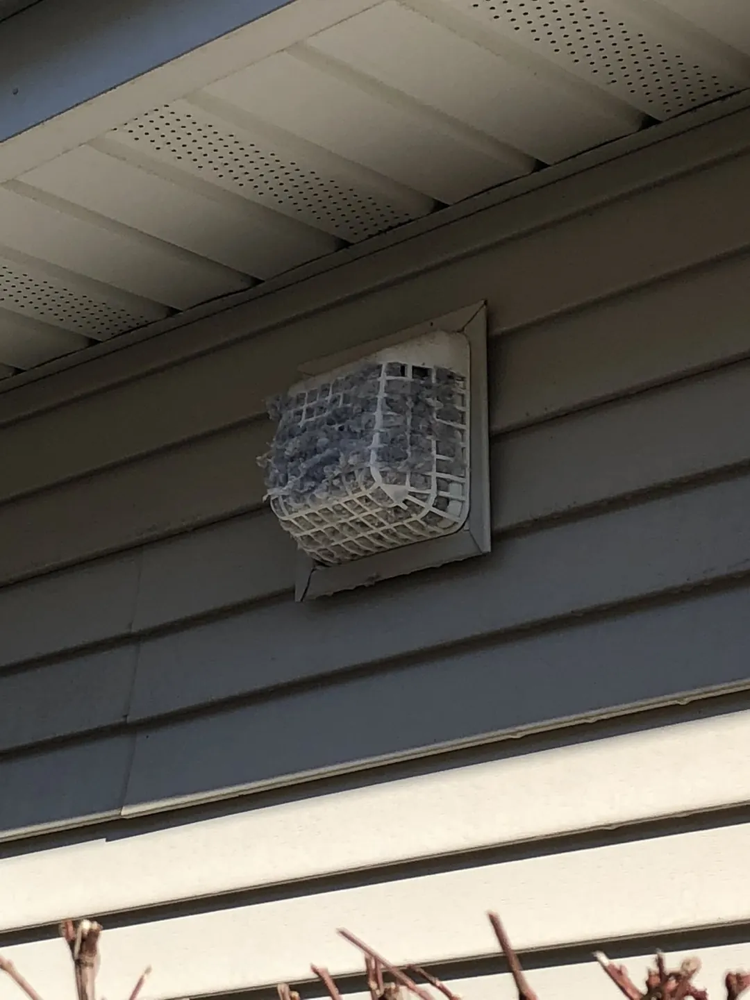
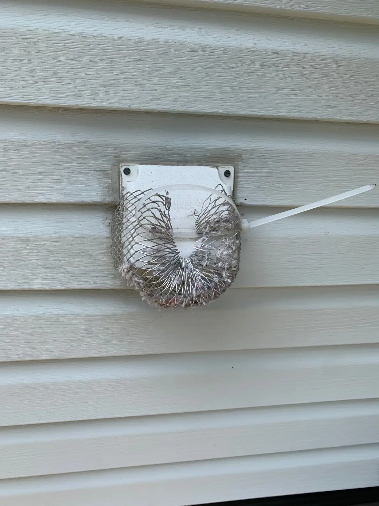

Affordable Dryer Vent & Gutter Cleaning Information and FAQs
Questions and Answers About Dryer Vents and Gutter Cleaning Services
Questions and Answers About Dryer Vents and Gutter Cleaning Services
Check out the information below and give Affordable Dryer Vent & Gutter Cleaning a call today for more information.
Dryer Vent Questions
Does your dryer take longer than 35 minutes to dry a load of clothes?
If the answer is yes, don't ignore the issue. It probably means your dryer is clogged with debris.
Does your dryer get very warm or hot to the touch during a drying cycle?
If you answered YES to any of these questions, give us a call at (732) 966-6914.
Do you have lint build-up on your dryer door?
If you answered YES to any of these questions, give us a call at (732) 966-6914.
Is there no visible lint on the lint screen after a drying cycle?
If you answered YES to any of these questions, give us a call at (732) 966-6914.
Do clothes have a musty smell after a drying cycle?
If you answered YES to any of these questions, give us a call at (732) 966-6914.
Is there excess lint left on your clothes?
If you answered YES to any of these questions, give us a call at (732) 966-6914.
Does your dryer repeatedly stop during a cycle?
If you answered YES to any of these questions, give us a call at (732) 966-6914.
Has it been over a year since your last dryer vent cleaning?
You can avoid hazards by having your dryer and its ventilation system professionally inspected and cleaned every year.
Gutter Questions
Why do I need gutters and gutter services?
Rain is a natural element that can wreak havoc on a house if it’s not controlled by properly installed and maintained gutters.
What is the basic function of a gutter?
The basic function of a gutter is to provide a channel for redirecting water. They are designed specifically to reduce erosion by guiding water to a drain or safe area.
What can happen when gutters get clogged?
Clogged or damaged gutters can lead to water damage, leaks, mold, basement flooding, and expensive repairs.
Do you provide gutter cleaning and gutter guards?
We offer gutter cleaning, gutter installation, repairs and gutter guards. Call or text us now.
Do you offer K-Style gutters?
We offer gutter products and installation services. Call or text to discuss the best gutter system for your property.
Where do you provide service?
We serve Ocean County, Monmouth County, New Jersey and surrounding areas.

What You Don’t See Can Kill You!
Lint and debris can build up in your dryer vent duct and dryer hose. This reduces the air flow and causes a backup of lint, which is highly flammable. Eventually, this will create a fire. You can avoid these hazards by having your dryer and its ventilation system professionally inspected and cleaned every year.
Your Safety Is Our #1 Priority
Dryer maintenance requires more than just clearing out the lint screen. A clogged dryer vent can not only cost you a significant amount of money and efficiency of your dryer, but it could possibly cost you your home or worse yet, your life due to a fire.
Lint and debris can ignite. Regular inspection and cleaning can help reduce hazards.
Dryer works harder and longer when vents are blocked.
Dust elimination and improved dryer efficiency.

Lint is The Most Dangerous and Flammable Item in Your Home
According to the U.S. Fire Administration, failure to clean the dryer vent is the leading cause of dryer fires. It destroys thousands of homes each year, claiming millions in property loss.

You Need Gutters and Gutter Services
Rain is a natural element that can wreak havoc on a house if it’s not controlled by properly installed and maintained gutters. The basic function of a gutter is to provide a channel for redirecting water. They are designed specifically to reduce erosion by guiding water to a drain or safe area.
See gutter services →Get Your Questions Answered and Schedule Service Today!
Call or text us now. Our team is happy to help.